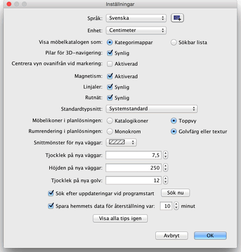

För att ändra inställningarna för Sweet Home 3D väljer du Sweet Home 3D > Inställningar... under Mac OS X eller Arkiv > Inställningar... under andra operativsystem.

I inställningsrutan kan du välja vilket Språk som används i Sweet Home 3D:s användargränssnitt och vilken Enhet som används när du ritar hemmet, på planlösningens linjaler och rutnät, samt på längder
som visas.
Knappen bredvid listknappen för språkval låter dig importera ytterligare språkfiler med filändelsen SH3L.
Radioknapparna Kategorimappar och Sökbar lista låter dig välja hur möbelkatalogen ska visas i varje Sweet Home 3D-fönster.
Kryssrutan för 3D-navigationspilarna låter dig visa pilknapparna som hjälper dig att navigera i 3D-vyn.
Kryssrutan Magnetism slår av eller på magnetismen som används i planlösningen när man ritar väggar och placerar ut möbler.
Kryssrutan Linjaler visar eller tar bort linjalerna runt planlösningens ruta.
Kryssrutan Rutnät visar eller tar bort rutnätet i planlösningen.
Alternativen Katalogikoner och Toppvy låter dig välja hur möbler ska ritas i planlösningen (se bilderna
nedan).
Alternativen Monokrom och Golvfärg eller textur låter dig välja om rummen i planlösningen ska
ritas med färg eller texturen som du valt för deras golv, eller med en grå färg (skrivs ut som vitt).
Listrutan Väggmönster i planlösningen låter dig välja mönstret som ska användas för att fylla i väggarna i planlösningen.
Fältet Tjocklek på nya väggar ställer in tjockleken på nya väggar och gäller från och med när inställningsrutan stängs.
Fältet Höjden på nya väggar ställer in höjden på nya väggar och gäller från och med när inställningsrutan stängs.
Tjocklek för nya golv ställer in tjockleken på golv på nya nivåer.
Rutan efter Spara hemmets data för återställning var bestämmer antalet minuter mellan två sparningar för öppnade hem. Dessa hem sparas automatiskt i privata filer som kommer att öppnas för återställning nästa gång Sweet Home 3D startar, om programmet kraschade vid senaste användningen.
Slutligen, knappen Visa alla tips igen återställer svaret du gav i kryssrutan Visa inte detta tips igen i tips-dialogrutorna som visas när du klickar på något verktyg. Detta betyder att alla dialogrutorna där du markerade kryssrutan kommer att visas igen.
 |
|
 |
Standardrenderingen av planlösningen med
katalogikoner,
monokroma golv och väggar
ifyllda med mönster för snittyta |
Rendering av planlösning med toppvy-ikoner
av möblerna,
golvfärger och väggarna
ifyllda med svart |
|